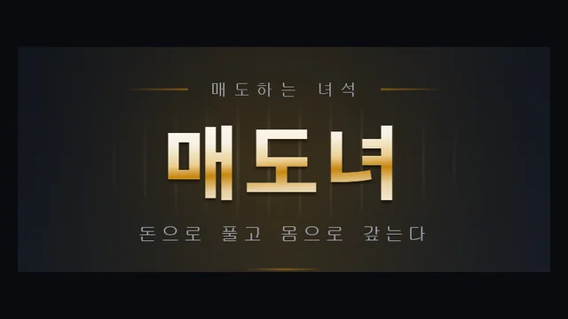
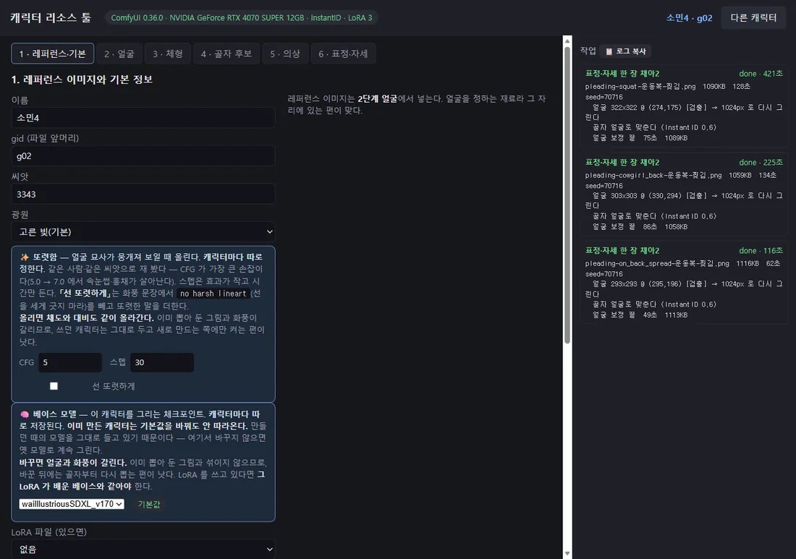
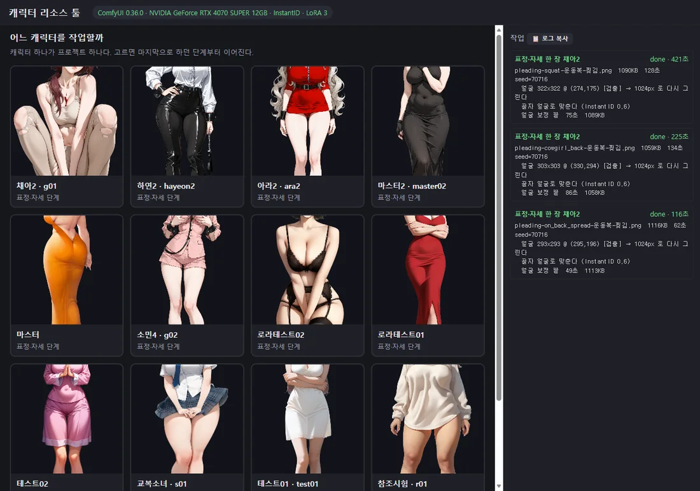

매도녀 플레이하기web-production-08fc8.up.railway.app · 브라우저에서 바로 돕니다 (로그인 필요 · 성인)▶ 플레이 →성인 콘텐츠를 1인이 계속 양산할 수 있는 구조로 만들고, 그 콘텐츠를 계속 원하게 만드는 경제 루프를 붙이는 것이 이 작업의 목표입니다.
성인 게임입니다. 이 문서의 이미지는 노출 부위를 가렸습니다. 게임에 들어 있는 그림은 아직 파이프라인 검증용 더미이며 최종본이 아닙니다.
여럿이 한 방에 들어와 같은 주식 차트를 보며 10분짜리 라운드를 돌리고, 번 돈으로 감옥에 갇힌 사람을 꺼내는 웹 게임입니다. 꺼낸 사람과의 이야기는 미연시로 이어집니다. 기획 · 개발 · 아트 파이프라인을 혼자 진행하고 있고, 위 단추로 지금 해볼 수 있습니다.
왜 만들었나 — 검증된 재미에, 돈이 아닌 보상을
크래시 게임(그래프 게임)은 이미 사설 도박 사이트에서 재미가 검증된 룰입니다. 이 룰로 게임을 만들면 재미있겠다고 생각했습니다. 문제는 보상이었습니다. 번 돈을 돈으로 돌려주는 순간 말 그대로 도박일 뿐이라, 마땅한 보상을 찾다가 미연시에 닿았습니다. 번 돈으로 사람을 꺼내고, 그 사람과의 이야기를 여는 것입니다. 인게임이 애초에 사행성을 띤 이상 어중간하게 가지 않고, 가는 김에 화끈하게 성인용 미연시로 방향을 잡았습니다.
그 과정에서 룰도 바꿨습니다. 한 판에 끝나는 크래시 게임을 주식 차트 개념으로 바꿔, 유저가 돈을 걸고 빼는 플레이를 계속 반복하며 ‘지속’되는 게임이 되게 했습니다. 한 번 크게 터뜨리고 끝나는 구조로는 히로인 수집이 1회성 정산에 그치기 때문입니다.
베팅하는 맛을 키우려고 넣은 장치들
차트 자체가 재미의 원천이므로, 걸고 빼는 순간의 긴장과 도파민을 키우는 데 장치를 집중했습니다.
히로인을 혼자 양산하기 위한 장치들
히로인을 계속 늘리려면 사람 손이 들어가는 공정이 없어야 합니다. 그림 · 움직임 · 음성 · 대화 네 갈래 모두 혼자서 계속 찍어낼 수 있는 파이프라인으로 만들었습니다.
21명에서 4명으로
21명 전원에게 그림을 붙이고 이벤트 41편까지 만들었다가 7명, 다시 4명으로 줄였습니다. 들어 있는 그림은 아직 더미입니다. 지금 일의 결과물은 그림이 아니라 파이프라인이 일관성을 어디까지 보장하느냐이고, 방식이 확정되면 최종본으로 한 번에 다시 만듭니다. 12일에 241커밋이 가능했던 이유가 이 판단이라고 봅니다.
자료
개발 기록
본문에서 줄인 판단과 실패를 절별로 접어 뒀습니다. 제목을 누르면 펴집니다.
01같은 방의 모두가 같은 차트를 봅니다 — 시드 결정론
이전 룰은 곡선이 지수함수라 시작 시각만 주면 각자 계산할 수 있었습니다. 랜덤 워크는 계산할 수 없습니다. 그렇다고 초당 수십 번 가격을 뿌리면 트래픽과 체결 신뢰가 같이 무너집니다. 그래서 서버는 라운드마다 시드만 주고, 클라이언트가 같은 난수 생성기로 같은 경로를 재현합니다. 중간에 들어온 사람도 지나간 차트를 즉시 전부 그립니다.
- 정수만 씁니다 — 실수 연산이 하나라도 들어가면 서버(파이썬)와 화면(JS)이 마지막 자리에서 갈리고, 3,000틱을 지나는 동안 차트가 서서히 어긋납니다. 32비트 xorshift · 원 단위 정수 · 나눗셈은 전부 반올림입니다.
- 내림으로 뒀더니 게임이 기울었습니다 — 매 틱 0.5원씩 깎여 3,000틱에 약 −15%의 하락 편향이 생겼습니다. 재서 잡은 버그입니다.
- 검증 — 시드마다 가격 경로 전체의 해시를 서버와 화면에서 대조합니다. 상장폐지(죽음의 나선) 구간까지 포함해 비트 단위로 일치합니다.
02체감 속도는 변동성이 아니라 축이 만듭니다
“그래프가 느리다”는 지적을 변동성을 올려 푸는 대신 원인을 셋으로 갈랐습니다.
- x축이 범인이었습니다 — 10분 전체를 한 화면에 넣으면 10초가 10픽셀입니다. 아무리 움직여도 느려 보입니다. 최근 90초 창으로 바꾸니 10초가 67픽셀이 됐습니다.
- y축 자동 스케일이 변동성을 지웁니다 — 선이 늘 화면을 꽉 채우므로 변동성을 10배로 올려도 보이는 것은 똑같습니다. 최소 범위를 강제해야 잔잔할 땐 잔잔해 보이고 클 때 실제로 커 보입니다.
- 틱 주기 — 200ms는 초당 다섯 번이라 눈에 끊겨 보입니다. 100ms로 내렸습니다.
03혼자 하는 게임이 아니라는 신호
- 순위를 둘로 나눴습니다 — 수익률과 수익금. 충전을 붙이는 순간 수익금 기준은 깨집니다. 시드가 크면 같은 상승률에도 절대 수익금이 커져서 충전이 곧 1등이 되고 나머지는 그만둡니다. 수익률 기준에서는 시드 크기가 순위에 거의 영향을 주지 않습니다.
- 스페셜 코인은 돈으로 못 삽니다 — 라운드 순위 보상으로만 나옵니다. 그래서 “오래 굴릴 수 있다”와 “잘해야 모은다”가 분리됩니다.
- 두 순위표에 똑같이 주면 안 됩니다 — 켜고 재 보니 상위권이 전부 같은 개수를 받았습니다. 시드가 크면 수익금이 높고 수익률이 낮아 두 순위가 뒤집히는데, 그러면 두 등수의 합이 상수가 되어 보상이 평평해집니다. 순위를 나눈 의미가 사라집니다.
- 방마다 봇 트레이더를 앉히고, 차트의 체결 표시와 순위표에 얼굴을 붙였습니다. 사람이 적은 시간대에도 남이 사고파는 것이 보여야 합니다.
- 인게임 컷인 — 거래 중에 히로인이 말을 겁니다. 시초가 대비 오르면 표정이 달아오릅니다. 거래 화면과 수집 콘텐츠가 서로를 가리키게 했습니다.
04그때 세운 연출 원칙은 남았습니다
- 01
지연 — 결과를 즉시 주지 않는다
다만 반드시 스킵이 있어야 합니다. 100번 반복할 때 연출이 고문이 되면 안 됩니다.
- 02
단계적 공개 — 조금씩 흘린다
문 흔들림 → 빛이 샘 → 색 → 카드. 흔한 결과에서 가장 자주 보는 도입이라 자물쇠는 두 번만 덜컹거리게 했습니다.
- 03
승급 페이크아웃 — 이것이 심장이다
빛이 항상 흰색에서 시작해 진짜 등급까지 한 칸씩 올라갑니다. 절대 내려가지 않습니다 — 금빛을 보여주고 흔한 것을 주면 속았다고 느낍니다. 연출 길이가 등급에 저절로 비례하고(흔한 것 1.9초, 귀한 것 4.0초), 승급 직전의 0.18초 정적이 “혹시?”를 만듭니다.
벤치마크로 니케와 우마무스메를 프레임 단위로 뜯어봤습니다. 구조는 같습니다 — 지연 → 단계적 공개 → 승급. 차이는 설계가 아니라 밀도이고, 그 밀도의 80%는 코드가 아니라 에셋과 사운드입니다. 웹에서 올라갈 사다리를 사운드 → 화면 효과 → 파티클 → 캐릭터 등장 → 3D 다섯 단으로 적고 현실적 상한을 3단(파티클)에서 끊었습니다. 니케가 3D인 것은 캐릭터가 이미 3D라서지 연출이 3D여야 해서가 아닙니다.
사운드는 새로 만들었습니다. 그전까지 매수 체결음을 빌려 쓰고 있었는데, 그 소리는 “돈이 나갔다”는 뜻이라 기대감과 정반대로 작동했습니다. 라이저 · 임팩트 · 승급음 · 등급 화음 네 층으로 다시 깔았고, 라이저는 넉넉히 깝니다 — 소리가 먼저 “얼마나 갈지”를 알려주면 페이크아웃이 죽습니다.
05돈은 무한, 코인은 유한
돈은 복리로 무한히 불어나지만 스페셜 코인은 라운드 순위로만 나와서 라운드당 최대 세 개입니다. 그래서 실질 속도 제한은 돈이 아니라 코인이고, 핵심 이벤트에만 코인을 받습니다. 아무리 벌어도 한 번에 다 열 수는 없습니다.
- 철창값은 칸마다 두 배씩 뜁니다. 연 철창의 빚에는 하루 10% 이자가 붙고, 아무 금액이나 나눠 낼 수 있습니다.
- 히로인의 상태는 셋입니다 — 애정 · 절망 · 욕정. 절망은 50에서 시작하고 가득 차면 팔려 나갑니다. 수집물이 가만히 있지 않으니 버는 이유가 계속 갱신됩니다.
- “몇 명 모았나”로 붙는 효과는 없앴습니다 — 효과가 사람에게서도 오고 머릿수에서도 오면, 화면에서 “내가 지금 왜 이만큼 받고 있나”를 두 군데서 더해야 알 수 있습니다. 사람을 구했으면 그 사람의 효과가 붙습니다. 그게 전부입니다.
- 순서가 값을 정합니다 — 철창값도, 빚 이율도, 이벤트 애정 문턱도 로스터 순서에서 나옵니다. 그래서 메인 히로인이 맨 앞입니다. 튜토리얼이 꺼내 주는 사람이라 문턱이 가장 낮아야 합니다.
06튜토리얼이 곧 프롤로그입니다
튜토리얼1(투자 학습) → 차트가 끝없이 하락해 상장폐지 → 빚쟁이에게 잡혀 감옥 → 여주인에게 당함 → “어떻게 나가냐” → 코인을 대출받아 불려 갚으라는 설명 → 튜토리얼2(빚 갚기) → 자유가 되어 나가는데 다른 방에서 여자들 소리 → “갇힌 게 너뿐이겠냐” → 스스로 되돌아갑니다 → 메인 히로인을 꺼내고, 총 빚이 한참 남았다는 것을 알고 좌절합니다.
- 튜토리얼의 인게임은 서버를 타지 않습니다. 값도 체결도 미리 정해진 각본입니다. “상장폐지를 반드시 본다”가 연출상 필수라 확률에 맡길 수 없었습니다.
- 안내는 코치마크로 합니다 — 가리키고, 멈추고, 나머지를 막습니다. 설명을 읽히는 대신 그 자리를 누르게 합니다.
- 주인공은 실루엣입니다. 전면 일러스트에서 얼굴을 주지 않습니다.
07메인 히로인을 바꾼 판단
처음 메인은 채아였고 소민으로 바꿨습니다. 튜토리얼이 되돌아오는 이야기이기 때문입니다. 소민은 실종 신고가 가출로 처리돼 아무도 찾지 않고, 본인도 그것을 압니다. 되돌아오는 선택이 곧 처음으로 찾아온 사람이 되는 일과 겹칩니다. 채아였다면 “안 도와줘도 나갈 사람”을 도운 것이 되어 선택이 가벼워집니다. 채아는 값을 치르고 꺼내는 두 번째 사람일 때 더 삽니다.
소민이 무너지는 자리는 이름입니다. 여주인이 번호로 부르기 때문에, 튜토리얼의 마지막이 이름표 하나로 끝납니다. 캐릭터 설계의 공통 뼈대도 같습니다 — 여주인은 각자가 제일 자랑스러워하던 바로 그것을 겨눕니다.
넷은 미연시 원형이 겹치지 않게 골랐습니다 — 기 센 연하 · 여동생계 · 쿨데레 · 요염한 누나.
08대사를 양산해도 사람이 안 바뀌게 — 페르소나
목표는 짜여진 대화가 아니라 실시간으로 유혹당하는 느낌입니다. 그러려면 대사 양산이 전제인데, 양산의 전제는 “그 사람처럼 들리는지”를 기계가 판정할 수 있어야 한다는 것입니다. 그러지 않으면 스무 줄쯤 지나 딴사람이 됩니다. 그림에서 얼굴을 못 박지 않으면 딴사람이 되던 것과 같은 문제입니다.
그래서 지어내지 않고 세서 적었습니다. 메인 히로인의 기존 대사 242줄을 집계한 값을 그대로 규칙에 박았습니다.
경향과 규칙을 갈라 적습니다. 검사기는 규칙만 막고 경향은 비율로 봅니다. 경향까지 규칙처럼 다루면 대사가 전부 같은 모양이 됩니다. 여기에 기억을 따로 둡니다 — 기억이 어긋나는 것이 말투가 어긋나는 것보다 훨씬 빨리 들킵니다.
목소리 지시도 같은 표에 들어 있습니다. 상태별 톤까지 적혀 있어서 그대로 다국어 TTS의 연기 지시서가 됩니다. 번역은 쉽고 연기력 보존이 관문이라고 보고, 그 관문을 데이터 쪽에 먼저 만들어 둔 것입니다.
09그래서 세 번 갈아탔습니다
- 01
정지본을 코드로 밀고 늘린다
한 장을 8픽셀 가로 띠로 잘라 띠마다 밀어 봤습니다. 일렁이기만 했습니다. 원리상 그렇습니다 — 머리카락이 흔들리려면 그 뒤에 있어야 할 것이 그림에 없습니다. 수치로는 그럴듯했고, 여기서 숫자가 움직임의 품질을 말해 주지 않는다는 것을 배웠습니다.
- 02
i2v로 루프 영상을 만든다
절반 성공. 결과가 애니메이션 WebP라 이미지 태그에서 그냥 돌아서 카드 렌더링 코드를 한 줄도 고치지 않았습니다. 함정은 둘이었습니다. 카메라가 흘러가 구도가 깨지고(지시를 “삼각대에 고정된 카메라”로 구체화하고 프레임 수를 줄여 잡았습니다), 첫 프레임과 끝 프레임이 맞지 않아 루프가 툭 끊깁니다(되감기로 왕복시켰습니다). 근본 한계는 매 프레임을 다시 그리므로 얼굴까지 같이 뭉개진다는 것이었습니다.
- 03
WebGL 메시 워프 리그로 좌표만 옮긴다
레퍼런스의 움직임 지도를 재 보니 속은 까맣고 윤곽만 희었습니다. 출렁임은 변형이 아니라 변위였습니다. 그래서 그림은 건드리지 않고 좌표만 옮깁니다. 얼굴 속은 한 픽셀도 바뀌지 않고 가슴과 머리카락만 움직입니다. 덤으로 루프 영상 117편 84MB가 통째로 사라졌고, 대사가 쓰지 않는 조합까지 489벌 전부가 움직이게 됐습니다.
10캐릭터툴 — 온디바이스 생성 파이프라인
그림은 이 PC의 생성 서버를 직접 불러서 뽑습니다. 공짜이고 무제한이고 API 키가 없으며, 성인 콘텐츠 제약에 걸리지 않습니다. 구조는 골자 한 장을 못 박고 → 그 얼굴에 나머지를 맞추는 것입니다. 사람을 붙잡는 수단은 셋을 나란히 두고 얼굴 임베딩 코사인으로 실측해서 골랐습니다.
핵심은 프롬프트가 말하지 않은 것은 씨앗이 정한다는 것입니다. 자세는 프롬프트가 정하므로 자세마다 씨앗을 흩을 이유가 없었는데, 흩은 만큼 옷 길이 · 색 · 찢긴 자리가 컷마다 달라졌습니다. 베이스 모델도 같은 씨앗으로 셋을 나란히 재서 골랐습니다 — 얼굴이 뭉개지던 원인은 해상도가 아니라 모델이었습니다.


11하한은 세 곳에 박습니다
- 실존 인물의 사진을 얼굴 소스로 쓰지 않습니다. 받아온 학습 자료 22장이 실명이 박힌 실존 배우의 사진(표지 · 워터마크 포함)인 것을 확인하고 그 경로를 닫았습니다. 대신 툴로 학습용 이미지를 직접 생성해 씁니다.
- 성인 하한 없이 생성하지 않습니다. 하한을 프롬프트 · 네거티브 · 등신 검수 세 곳에 겁니다. 하한에 예외를 만들면 그 예외가 구멍이 되기 때문에, 생성 경로를 새로 만들 때마다 세 곳을 다 겁니다.
- 노출도를 툴에서 다루므로 플랫폼별 심의 판을 따로 설계할 수 있습니다. 같은 장면을 수위만 바꿔 다시 뽑는 일이 사람 손이 아니라 설정값이 됩니다.
- 사행성은 환전 없음 · 확률 공시 · 천장 정책 명시로 정리했습니다.
12다음
- 다국어 TTS 더빙 — 페르소나의 목소리 지시가 그대로 입력이 됩니다. 관문은 번역이 아니라 연기력 보존입니다.
- 시즌제 고유 히로인 — 생산 단가가 이미 낮으므로 시즌마다 새로 찍어낼 수 있습니다. 지나간 시즌의 사람은 가진 사람만 계속 갖습니다.
- 배포 — 스팀과 안드로이드.